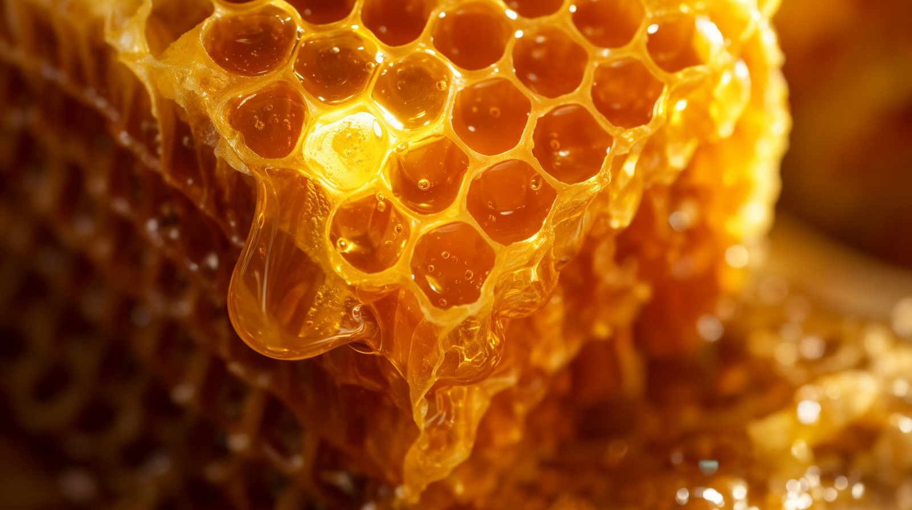
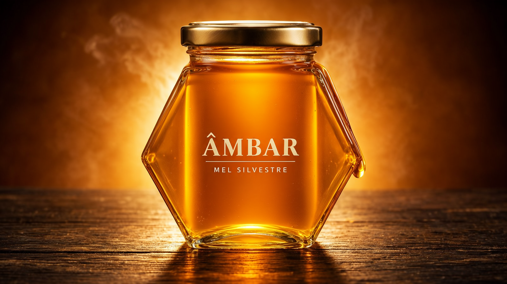
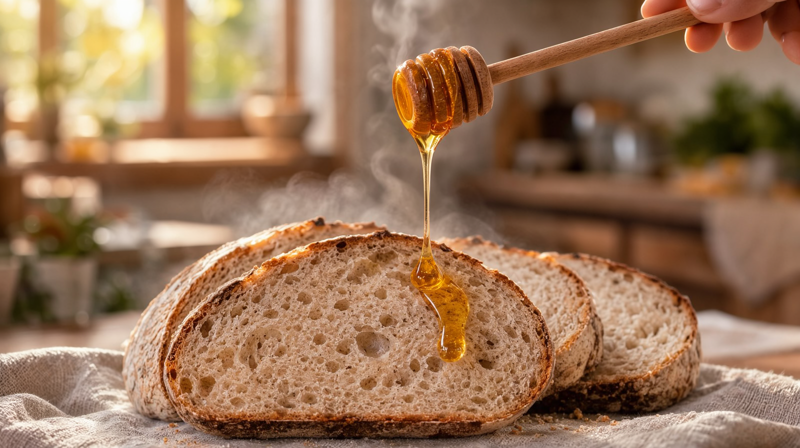
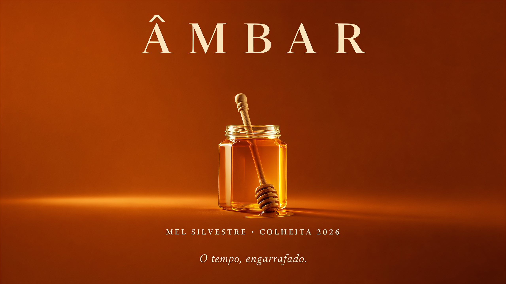

A v4 ataca as duas frentes que a v3 deixou mapeadas: o gargalo de VAE decode (resolvido — 5× mais rápido com decode tiled, todos os takes agora em 704p nativo) e a trilha sonora (agora música gerada por IA com Ace-Step, mixada sob o som diegético do H3). Produto novo: ÂMBAR, mel silvestre — 20 s · 720p · 48 fps.
Pesquisa + benchmark da v4
Benchmark no mesmo still, 25 frames a 1280×704 (Turbo Q5, 4 steps):
O produto novo · 20 s · 1280×720 · 48 fps
Trilha: tema instrumental gerado com Ace-Step 1.5 turbo
("warm fingerstyle acoustic guitar, honey-gold morning, 76 bpm") mixado a −4,8 dB sob os sons
diegéticos do H3 (zumbido de apiário, fios de mel, cozinha da manhã). Versão 24 fps em
video/ambar_commercial.mp4.




Camada 1 — diegético (H3@4st, 4 doadores de 144 s cada): zumbido de apiário → pote (tom quente + gota) → fio de mel (swell + percussão leve) → pão (acorde final), costurados com acrossfade 0,3 s. Camada 2 — música (Ace-Step 1.5 turbo, 8 steps): instrumental de 20 s, tags "warm fingerstyle acoustic guitar, soft ambient folk, honey-gold morning, 76 bpm, no drums", E major, duration 20 — mixada a volume 0.55 sob a camada 1 com amix + fades.
A jornada
| v1 | v2 | v3 | v4 | |
|---|---|---|---|---|
| Produto | Perfume | Café | Cerveja | Mel |
| Takes de vídeo | H3@4st, 480p | H3@8st + 1 Wan 704p | H3@8st + 1 Wan 704p | 4× Wan 704p nativo (1 fp16 + 3 Turbo) |
| Decode/frame 704p | — | ~22 s | ~22 s | 4,4 s (tiled) |
| Fps | 24 | 24 | 48 | 48 |
| Áudio | ambiência | ambiência | trilha dirigida via H3 | música IA (Ace-Step) + diegético |
| Tempo total de render dos takes | ~9 min | ~58 min | ~78 min | ~21 min (hero 696 s + 3× Turbo 180-186 s) + ~9 min de áudio |